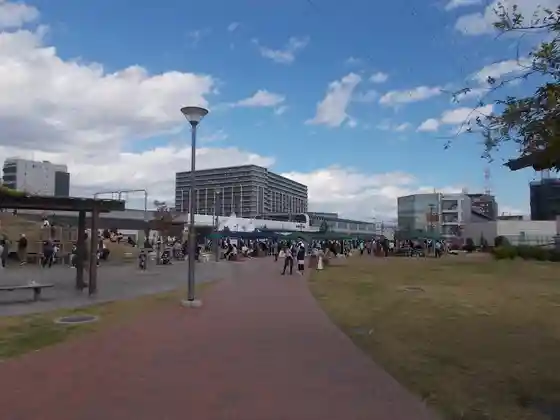
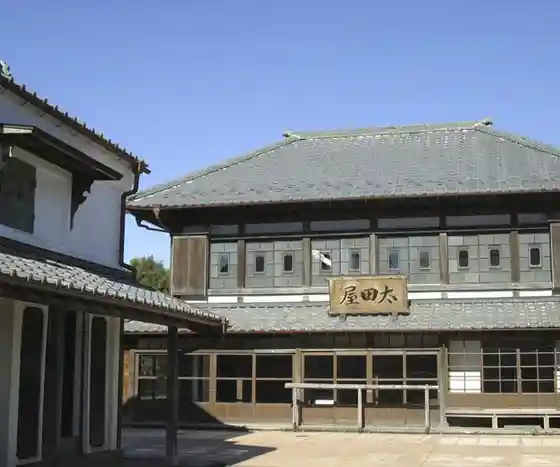
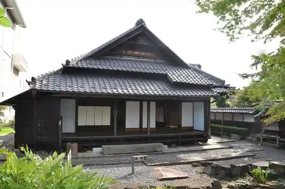
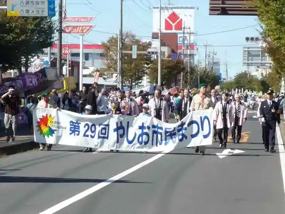

Nakagawa Yashio Furawa Park
Yashio, Saitama · 048-951-0323 · Official / source link
Yashio Ekimae Park
Yashio, Saitama · 048-996-2111 · Official / source link

Ota Ie House
Yashio, Saitama · 048-997-6666 · Official / source link

Yashio Ritsu Museum
Yashio, Saitama · 048-997-6666 · Official / source link

Yashio City Tami Festival
Yashio, Saitama · 048-996-2111 · Official / source link

Hachijo Shinsui Park
Yashio, Saitama · 048-996-2111 · Official / source link
Ose no Shishi Mai
Yashio, Saitama · 048-997-6666 · Official / source link
Nakagawa Yashio Suihen no Raku Ko
Yashio, Saitama · 048-996-2111 · Official / source link
Yashio Fureai Nosambutsu Chokubai Tokoro
Yashio, Saitama · 048-996-0003 · Official / source link
Nichome no Shishi Mai
Yashio, Saitama · 048-997-6666 · Official / source link